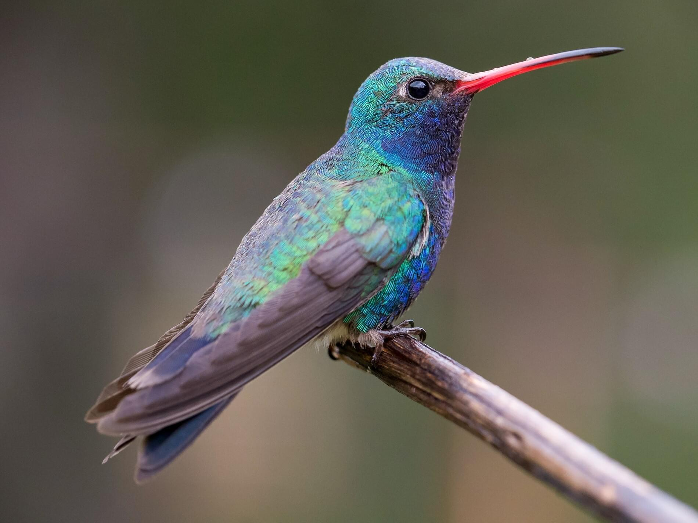
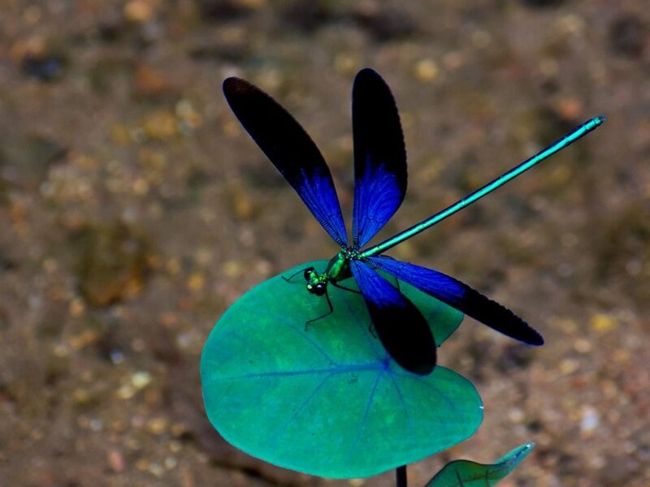
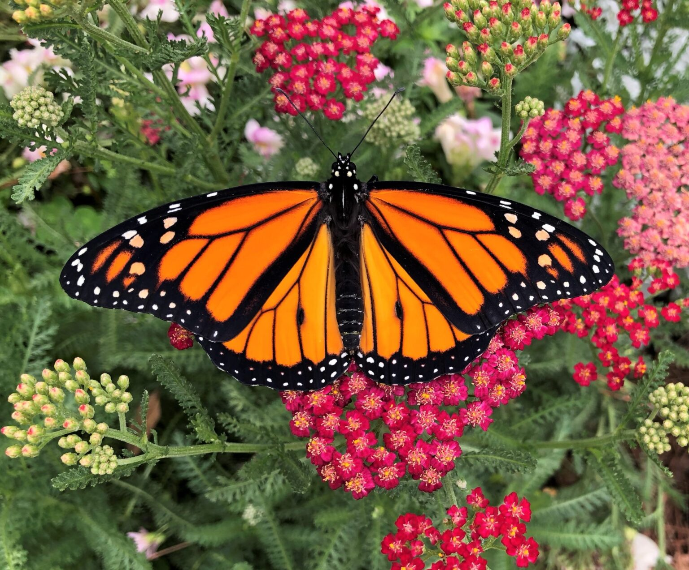
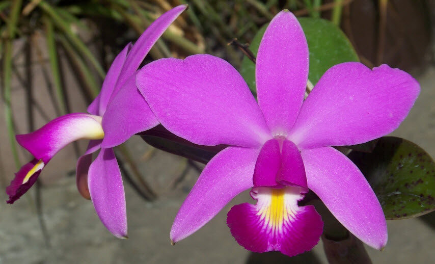

Esta sera la galeria de los animales y flora que me gustan y que tendre en cuenta para un posible tatuaje.
| Animal | Foto | Descripcion |
|---|---|---|
| Colibri |  | Un colibrí es un ave pequeña originaria de América, conocida por su capacidad de volar, incluyendo la habilidad de flotar y moverse hacia atrás. Estos pájaros se alimentan principalmente de néctar |
| libelula |  | Una libélula es un insecto con un cuerpo alargado, dos pares de alas transparentes y grandes ojos compuestos que cubren la mayor parte de su cabeza, ofreciéndole una visión de casi 360 grados |
| Mariposa Monarca |  | La mariposa monarca es un lepidóptero de color naranja brillante con venas negras y manchas blancas en los bordes de las alas |
| Orquidea Morada |  | Una orquídea morada es una flor exótica y elegante que pertenece a la familia Orchidaceae, reconocible por sus pétalos y sépalos de color morado, incluyendo un característico labelo más grande y con forma irregular. |